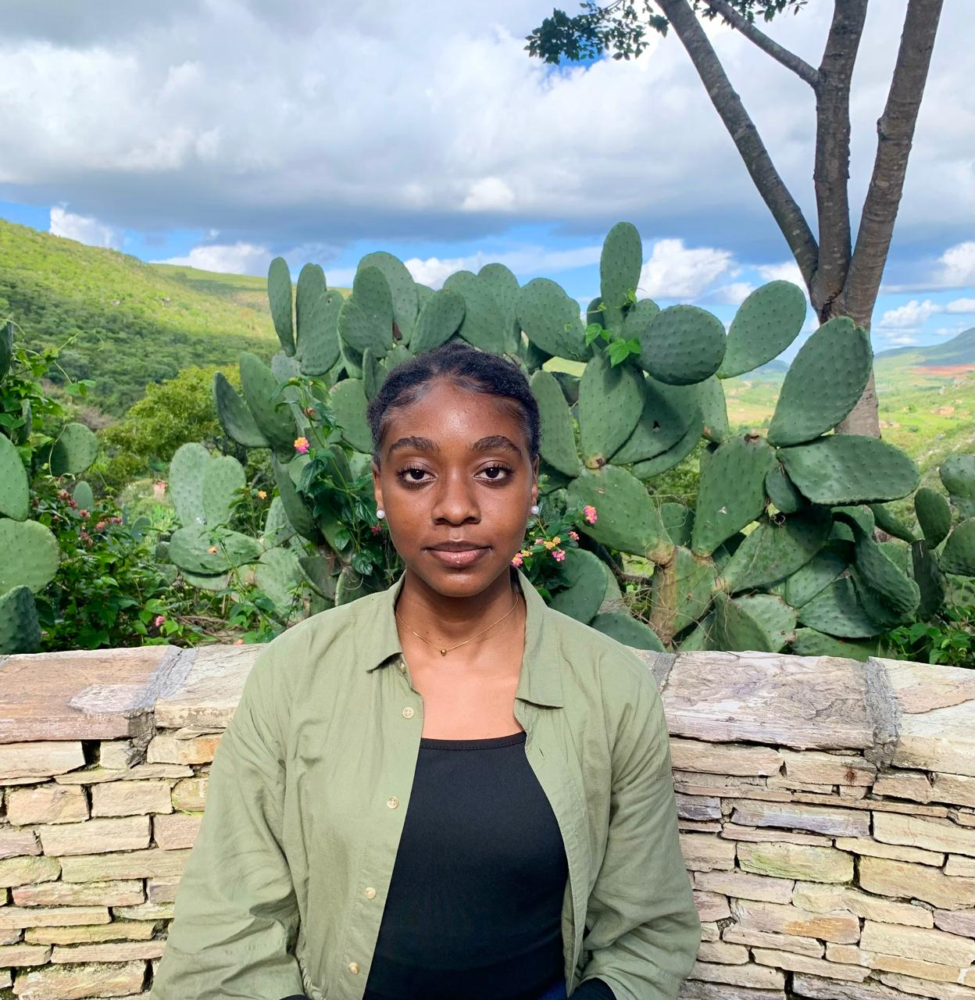

Gratidão por cada presença

Obrigada a cada pessoa que fez parte deste momento, seja com presença, palavra, memória, música ou carinho. O Baile Cósmico existe porque há pessoas que transformam celebrações em lembranças eternas.

Obrigada a cada pessoa que fez parte deste momento, seja com presença, palavra, memória, música ou carinho. O Baile Cósmico existe porque há pessoas que transformam celebrações em lembranças eternas.